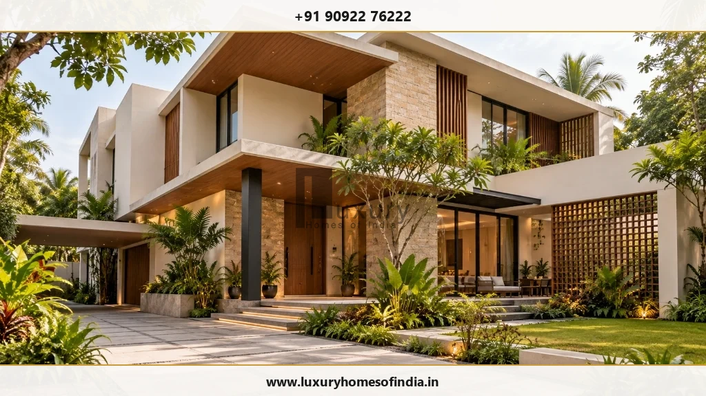
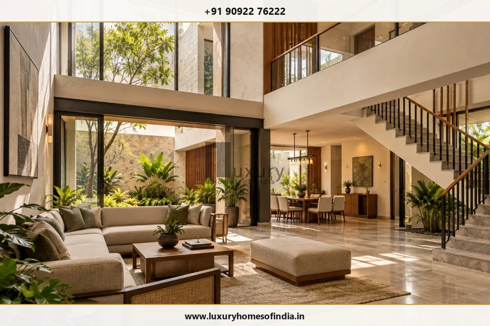
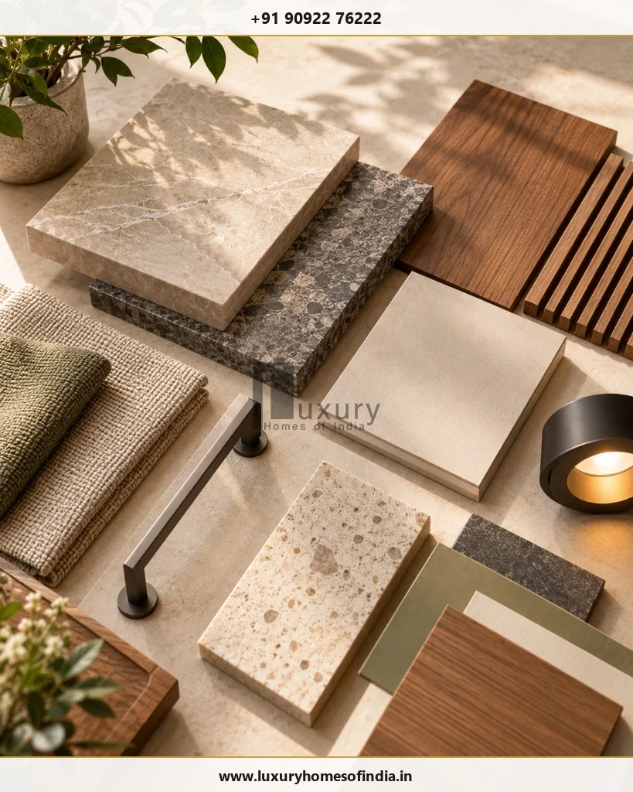
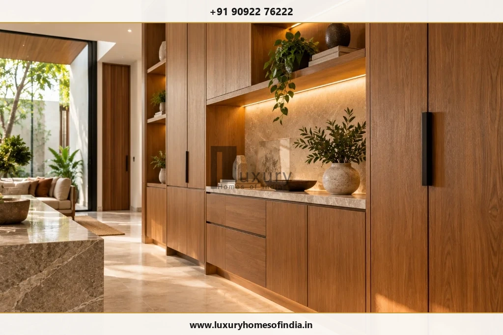

Custom Luxury Home Builders in Chennai: How to Plan a Home Around Your Lifestyle
Key Takeaway: What Custom Luxury Building Demands
Custom luxury home building in Chennai is an integrated engineering and design discipline. Rather than selecting off-the-shelf villa layouts, custom construction weaves family living patterns, site microclimates, structural integrity, Vastu spatial orientation, and fine interior craftsmanship into one transparent execution process. Key success factors include establishing a detailed architectural brief, establishing bill-of-quantities (BOQ) clarity, enforcing strict waterproofing standards, and coordinating MEP (mechanical, electrical, plumbing) services before ground breaking.

Choosing custom luxury home builders in Chennai involves far more than picking a stylish exterior facade or selecting high-end marble samples. A truly bespoke home is built around the daily rhythms of your family, the physical orientation of your plot, and long-term durability against coastal weathering.
When executing a high-value residential project, fragmented coordination between independent architects, structural engineers, interior designers, and general contractors often leads to design compromises, budget inflation, and delayed timelines. A professional custom builder brings all of these disciplines under unified design governance.
1. Start with Your Lifestyle and Plot Microclimate
Every custom home journey begins with understanding how you intend to live. Spatial layouts should reflect family dynamics, entertainment expectations, privacy thresholds, and multigenerational requirements.
In Chennai, architectural planning must balance indoor comfort with harsh solar radiation and seasonal monsoons. Orientation plays a pivotal role in thermal performance:
- Solar Orientation: Living rooms and master bedrooms benefit from northern and eastern light exposure, while western facades require thermal mass or louvered shading to minimize evening heat absorption.
- Cross-Ventilation: Positioning openings along prevailing coastal wind paths ensures natural airflow across double-height courtyards and central living halls.
- Indoor-Outdoor Transitions: Covered verandas, shaded decks, and interior courtyards expand usable floor area while protecting living quarters from heavy rainfall.
2. Architectural & Engineering Coordination
A frequent failure point in luxury home construction is the disconnect between architectural vision and structural feasibility. Double-height ceilings, cantilevered upper floors, wide span glazing, and subterranean basements require precise structural modeling from day one.

Before concrete pouring begins, custom builders perform detailed MEP (Mechanical, Electrical, and Plumbing) integration drawings. This prevents destructive chasing of finished brickwork later for HVAC ducting, home automation conduits, or concealed plumbing lines.
3. Contractor Evaluation & Selection Matrix
When comparing custom home builders in Chennai, evaluating quotations purely on a per-square-foot baseline is misleading. Per-square-foot rates mask significant differences in structural specifications, brand allowances, waterproofing protocols, and site safety standards.
| Evaluation Parameter | Standard Builder Approach | Custom Luxury Builder Standard |
|---|---|---|
| Scope Definition | Generic per-sq-ft rate with hidden variations | Itemized BOQ with fixed specifications & brand approvals |
| Structural Design | Template column grids & standard foundation depth | Soil-test driven foundation design & seismic analysis |
| Waterproofing Protocol | Basic chemical wash on terraces & bathrooms | 5-layer elastomeric membrane + flood test validation |
| Interior Integration | Handed off to 3rd party after shell completion | Turnkey alignment of joinery, electrical, & civil trades |
| Quality Assurance | Supervisor periodic visual visits | Full-time site engineer with 42-point QA check sheets |
4. Material Palette Selection for Longevity
Selecting materials for a coastal city like Chennai requires balancing aesthetic richness with environmental resilience. High humidity, saline breeze, and intense sunlight will rapidly deteriorate improper materials.

Recommended material choices for Chennai custom homes include:
- Façade Materials: Ventilated stone cladding, terracotta louvers, or high-performance exterior grade HPL panels that shield internal walls from direct heat.
- Fenestration: Thermal-break aluminum or UPVC sliding systems with double-glazed low-E glass to cut solar heat gain by up to 65%.
- Interior Joinery: Marine-grade IS 710 plywood combined with natural teak, walnut, or metallic PVD accents for moisture-resistant elegance.
5. Budget Allocation Priority Framework
Managing the financial investment of a bespoke villa requires clear prioritization. Allocating resources effectively ensures that structural and environmental systems receive appropriate capital before aesthetic embellishments are finalized.
| Project Component | Budget Allocation % | Critical Focus Areas |
|---|---|---|
| Civil & Structural Shell | 35% - 40% | Foundations, concrete grade, anti-termite, structural steel |
| Building Envelope & Glazing | 15% - 20% | High-performance glass, insulated roofing, exterior cladding |
| MEP, HVAC & Automation | 15% - 18% | VRV air conditioning, copper piping, solar power, smart lighting |
| Bespoke Interior Joinery | 18% - 22% | Custom cabinetry, wardrobes, kitchen systems, wood paneling |
| Landscaping & Site Services | 5% - 8% | Rainwater harvesting, drainage channels, perimeter security |
6. Turnkey Interior Execution & Millwork Integration
The ultimate refinement of a custom villa lies in its interior millwork and fixed joinery. When structural shell and interior design are executed seamlessly, wall niches, air conditioning diffusers, and indirect lighting troughs align perfectly with custom furniture pieces.

Turnkey execution eliminates the traditional friction between civil contractors and interior decorators. By pre-marking floor electrical boxes, wall sconces, and plumbing inlets during structural construction, the final interior installation proceeds cleanly without retrofitting modifications.
7. Integrating Traditional Vastu with Modern Living
For many homeowners in Chennai, Vastu Shastra is an essential spatial planning requirement. Custom builders integrate Vastu principles into contemporary architecture without compromising clean lines or open-plan circulation:
- North-East (Eesanya): Kept open, light, and ideally suited for water features, garden courtyards, or quiet prayer/meditation pavilions.
- South-East (Agni): Designated for kitchen and high-energy culinary zones, ensuring proper service ventilation.
- South-West (Nairuthi): Reserved for the master suite or structural heavy core to promote stability and privacy.